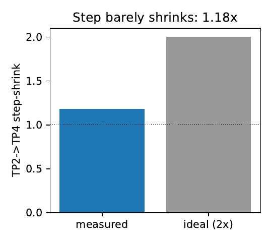
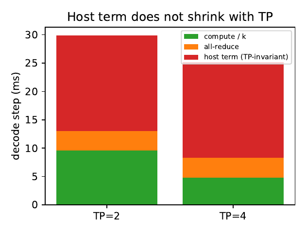
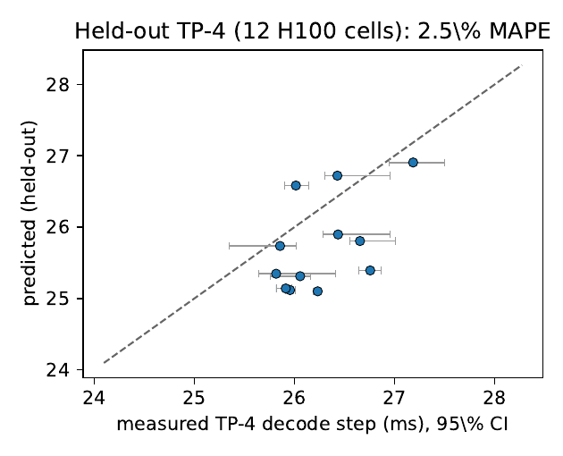
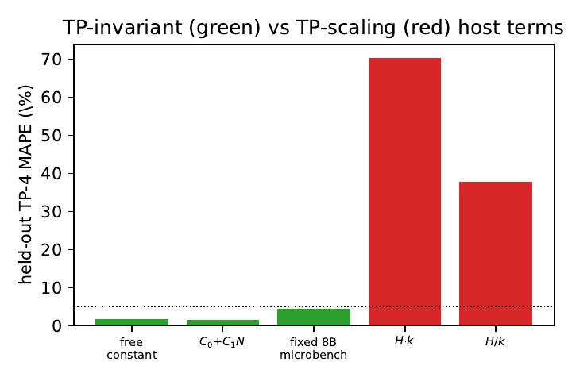
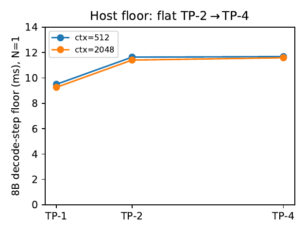
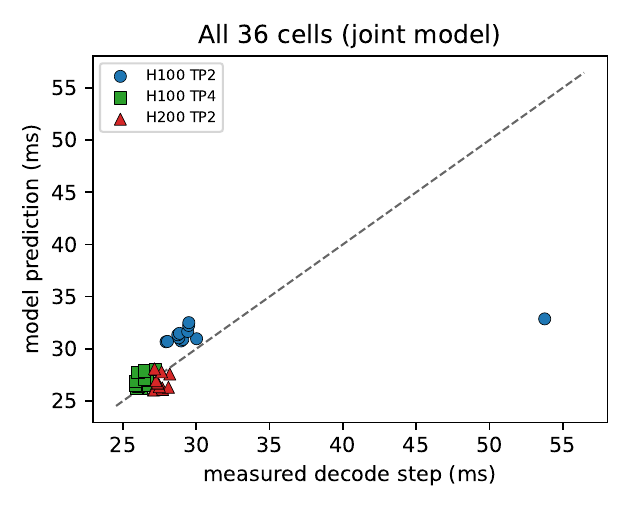

The textbook intuition is that splitting a 70B model across twice as many GPUs roughly halves the per-token decode time. We measure Llama-3.1-70B on H100 and H200 and find that going from 2 to 4 GPUs shrinks the decode step by only about 1.1×, not 2×. The reason is a per-step host/scheduler cost the rank-0 driver pays once regardless of how many GPUs you add. A closed-form model that treats this cost as TP-invariant — taken unchanged from an independent 8B microbenchmark — predicts held-out TP-4 to ~2.5% error; any form that scales the term with the GPU count fails by 38–70%.
Tensor parallelism (TP) is how you serve a model too big for one GPU: shard the weights across k GPUs and they each do roughly 1/k of the work. Every back-of-envelope model encodes the same hope — k GPUs make each decode step about k times faster, minus a small communication penalty. For the compute-bound prefill that mostly holds. For autoregressive decode, which dominates the latency a user feels, it does not. We measure why, and turn the why into a closed-form predictor.
Doubling the GPU count from TP-2 to TP-4 shrinks the 70B decode step by only 1.11× in-regime (1.18× including a disclosed outlier), nowhere near the ideal 2×. Even the paper's own composed baseline — sharded compute plus the real all-reduce — predicts only 1.36–1.53×, still well above what we measure. The gap is not an artifact of comparing to a fantasy ideal.
The missing quantity is a per-step host/scheduler cost the rank-0 driver pays once per decode step — and that does not divide by k. Fixing it to a value measured on an independent single-GPU 8B microbenchmark (zero TP fitting; one global 70B compute scale fit on TP-2 only) predicts the 12 held-out H100 TP-4 cells to 2.5% mean MAPE (5.1% max), versus 15.1% mean for the natural composed baseline.
Against a suite of host-model forms all calibrated on TP-2, every k-invariant form (a free constant, a batch-linear intercept, or the fixed 8B microbench value) generalizes to held-out TP-4 within 4.4% — but forcing the term to scale with TP fails badly: H·k by 70.3%, H/k by 37.7%. The data strongly reject any k-scaling of the additive term. That is the load-bearing finding.
An 8B model (which fits on one GPU, so all TP degrees are reachable) shows the decode-step floor is flat from TP-2 (11.6 ms) to TP-4 (11.7 ms) — measured directly, independent of the 70B model. The fitted invariant term (~14–17 ms) matches the independently measured 8B host floor (16.8 ms), identifying it as host/scheduler cost. We do not claim its value is uniquely determined, nor a complete causal decomposition.

Measured 70B TP-2→TP-4 decode step-shrink (in-regime 1.11×) versus the ideal 2×. The step barely shrinks because the dominant term is host-side and TP-invariant.
Three ideas are enough to follow the rest of the page: what tensor parallelism does, why decode is memory-bound while prefill is compute-bound, and what the host/scheduler actually does on every step. Each is developed in plain language before any vLLM-specific name appears.
Under Megatron-style TP, each of the k GPUs holds 1/k of the projection weights, and two all-reduces per layer recombine the partial activations; the KV cache is sharded over the k devices too. So the matrix multiplications get k times narrower and the all-reduce is the price of stitching the shards back together. Crucially, TP shards the kernels — the GPU work — but it does not shard the schedule: there is still exactly one scheduler iteration per decode step, run by a single rank-0 driver, no matter how many GPUs participate.
In prefill the model processes a whole prompt at once, so the matrix multiplications are large and the GPU is genuinely compute-bound — there sharding pays off, near 2× for 2× the GPUs. In decode each request emits just one token per step, so the projection GEMMs are tall-skinny and the memory roof binds: the step is spent streaming weights and KV through HBM, not doing arithmetic. Halving the compute by adding GPUs therefore helps far less, because the compute was never the bottleneck — and worse, something else on the step does not shrink with k at all.
Modern engines like vLLM and Orca run an iteration-level scheduler: on every decode step the rank-0 driver dequeues the running batch, updates sequence states, maps the paged KV block tables, builds the kernel arguments, and issues the launches. In eager execution this host/scheduler work sits on the critical path. The decisive fact for TP is that this work is paid once per step, by one driver, and is structurally identical at k=2 and k=4. It is the only cost in the step that does not divide by k.
Because only the green box shrinks with k while the blue box stays fixed, the step as a whole shrinks far less than 2× — and the more GPUs you add, the larger a fraction of the step the fixed host cost becomes.
The natural back-of-envelope model composes the single-GPU mechanism cost with communication:
Since the compute term goes as 1/k and the all-reduce is small at decode message sizes, this predicts a near-ideal 2× shrink. The measured shrink is 1.11×, and the leftover after subtracting sharded compute and the real all-reduce is a positive term that grows as 1/k compute shrinks — exactly the signature of a fixed floor the /k scaling wrongly shrinks.
We add one term to the failing composition: a non-overlapped host cost H(N) that is independent of the TP degree. Every piece is determined separately, and we are explicit about what is measured versus model-assumed — the host term and the NCCL constants are measured on independent microbenchmarks, and the single fitted serving parameter is one global compute scale.
A reused single-GPU roofline: each projection GEMM is the max of its FLOP roof and its HBM-streaming roof, summed over layers, with widths and KV heads divided by k. One global scale g (fit on TP-2 only) corrects the 8B-calibrated efficiencies; g = 0.31 in-regime, a substantial ~3× downward recalibration the host claims do not lean on.
A latency-bandwidth fit on a standalone NCCL all-reduce run on the same allocation (λ = 21.2 μs, β = 307 GB/s on H100). A decode step issues 2L all-reduces. It is small — 12.4% of the step — and calibrated on-allocation, so it contributes little error.
H(N) = s0 + s1(N−1), taken unchanged from a directly-measured 8B single-GPU framework-overhead microbenchmark: the median wall where GPU work is negligible isolates the per-step host floor (intercept s0 = 16.8 ms). Its defining property is no k dependence — the rank-0 driver runs one scheduler iteration per step regardless of sharding. It carries no free parameter.
The whole point is to predict a configuration the model never saw. We fit the single compute scale g on TP-2 serving cells only; the host term is fixed from the 8B microbenchmark with no fit to 70B or to TP-4 at all; we then predict the 12 H100 TP-4 cells cold. Because measured decode time is roughly flat (~26–30 ms), many additive decompositions fit equally well on TP-2 — the discriminating test is held-out TP-4, which is what separates a k-invariant term from a k-scaling one.
Fresh runs on PACE Phoenix: NVIDIA H100-80GB (NVLink) and H200 nodes, vLLM 0.19.1.dev, PyTorch 2.10+cu126, eager mode; each job records git SHA, conda environment, and GPU UUID/driver at submit. Workload: Llama-3.1-70B-Instruct, TP-2 and TP-4 on H100 and TP-2 on H200 (a fresh node, a second SKU). For N prompts of length ctx we generate 33 tokens with ignore_eos and greedy sampling, and report the steady-state per-step time (wall(T)−wall(1))/(T−1), which removes prefill (sampling and detokenize are included, and are part of the host floor). Grid: N ∈ {1,2,4,8}, ctx ∈ {512,2048,4096}, 12 timed reps/cell after 2 warmups, medians with bootstrap 95% CIs, 36 cells total.
The composed baseline (sharded compute + all-reduce) and the joint model (which adds the TP-invariant host term) are compared per configuration. On the held-out H100 TP-4 cells, the baseline mispredicts by 19.5% mean while the model — with zero TP-4 fitting — lands at 2.4%.
| SKU | TP | #cells | measured (ms) | baseline MAPE | model MAPE |
|---|---|---|---|---|---|
| H100 | 2 * | 12 | 31.0 | 20.7% | 8.0% |
| H100 | 4 (held-out) | 12 | 26.3 | 19.5% | 2.4% |
| H200 | 2 | 12 | 27.5 | 5.0% | 3.8% |
Baseline = T_cmp/k + T_ar (Eq. 1); Model adds the TP-invariant host term (Eq. 2). The starred H100 TP-2 row contains the one disclosed memory-pressure outlier, excluded from all training.
The in-regime TP-2→TP-4 shrink is 1.11× (1.18× including the disclosed outlier). Subtracting sharded compute and the all-reduce term from the measured step leaves a residual that is small at TP-2 but a tight positive constant (≈9 ms) at TP-4: as 1/k compute shrinks, more of the step is unexplained by compute, exactly as a TP-invariant floor predicts. In the decode-step composition below, the host term (red) is the largest component and is identical at TP-2 and TP-4; only compute (green) shrinks. The host term is 62.5% of the step; communication is just 12.4%.

Decode-step composition (H100, N=1, ctx 2048). The host term (red) is the largest component and is identical at TP-2 and TP-4; only compute (green) shrinks. All-reduce (amber) is a minor 12.4% slice.
With g from TP-2 and H(N) from the 8B microbenchmark, the model predicts the 12 held-out H100 TP-4 cells to 2.5% mean, 4.7% p95, 5.1% max MAPE — versus 15.1% mean (32.1% max) for the composed baseline. The error bars below are the 12-rep measurement 95% CIs.

Held-out TP-4 prediction (12 H100 cells), with measurement 95% CIs. Compute scale fit on TP-2 only; host term fixed from the 8B microbenchmark; zero TP-4 fitting.
This is the load-bearing finding. We calibrate five host-model forms on the in-regime TP-2 cells (the disclosed outlier excluded from training) and evaluate them held-out on TP-4. On TP-2 alone they are indistinguishable; only held-out TP-4 separates them. Every k-invariant form predicts TP-4 well — a free constant 1.7%, a batch-linear intercept 1.6%, the parameter-free 8B-microbench value 4.4% — whereas forcing the term to scale with TP fails: H·k gives 70.3% and H/k gives 37.7%. The data thus strongly reject any k-scaling of the additive term.
| host-model form | TP-4 mean MAPE | TP-4 max MAPE | verdict |
|---|---|---|---|
| H = free constant | 1.7% | 4.1% | k-invariant ✓ |
| H = C0 + C1·N (batch-linear) | 1.6% | 3.7% | k-invariant ✓ |
| H = 8B microbench S(N), fixed (0 params) | 4.4% | 7.5% | k-invariant ✓ |
| H = C·k (grows with TP) | 70.3% | 73.1% | k-scaling ✗ |
| H = C/k (shrinks with TP) | 37.7% | 38.9% | k-scaling ✗ |

Held-out TP-4 MAPE for host-model forms calibrated on in-regime TP-2. Every k-invariant form (green) generalizes; forcing the term to scale with TP (red) fails by 38–70%.
To measure the host floor directly, independent of the 70B model, we run an 8B model (which fits on one GPU, so all TP degrees are reachable) at TP-1/2/4 in the host-dominated small-N/small-ctx regime. The decode-step floor is 9.5 ms at TP-1, rising to 11.6 ms at TP-2 — the one-time cost of standing up the multi-process distributed runtime — then flat at 11.7 ms at TP-4. The TP-2→TP-4 invariance is the central claim, and here it is measured directly: the host floor does not shrink with TP.

Direct evidence: 8B decode-step floor (N=1). A one-time multi-process penalty at TP-1→TP-2 (9.5→11.6 ms), then flat TP-2→TP-4 (11.6→11.7 ms) — the host floor does not shrink with TP.
We report all 36 cells under the joint model. One configuration — TP-2, N=8, ctx 4096, the memory-tightest (70B on two GPUs at the largest batch×context) — mispredicts by 40.5%; its measured step is about 2× neighboring cells, consistent with KV/activation memory pressure leaving the clean decode regime. It is excluded from all training and starred throughout. Excluding it moves the fitted scale from g=0.35 to g=0.31 and the shrink from 1.18× to 1.11×; we report both and never tune to it. The 12 held-out TP-4 cells are all in-regime (four GPUs give more headroom), which is why the held-out prediction is clean.

All 36 cells under the joint model (Eq. 2), predicted versus measured. The single point well above the diagonal is the disclosed TP-2 memory-pressure cell (N=8, ctx 4096), excluded from training.
The value of the result divides cleanly by audience. For systems researchers it is a measured correction to a common attribution; for operators it is a closed-form planning tool that says, before provisioning, the marginal latency benefit of adding GPUs.
The remaining TP-decode inefficiency is not communication. All-reduce is only 12.4% of the step, so communication-overlap kernels — the standard fix — cannot recover these regimes. The inefficiency is a non-overlapped per-step host/scheduler cost the rank-0 driver pays once, structurally identical at k=2 and k=4. A latency model that attributes the leftover to communication, or that lets the additive term scale with TP, has a measured counterexample here: held-out, k-scaling forms fail by 38–70%.
The TP-invariant host floor is a hard lower bound on decode latency that no additional parallelism can cross. The crossover where the host term overtakes the sharded compute — where adding GPUs stops making decode faster — is, for 70B at the batch sizes we measure, already reached by k=2. The model predicts the decode step at each TP degree in closed form, so you can compute the marginal benefit of more GPUs before buying them, and know that the only way below the floor is to attack the host path.
This is one of a family of measurement deepdives built on the same closed-form decode mechanism model. A companion page stress-tests the same host term in a different direction — asking what CUDA-graph capture actually removes from the decode step. Read the companion: Does the Latency Mechanism Survive CUDA-Graph Capture?
The claims are deliberately bounded. Each item names a specific way the result could be over-read and the precise scope that remains valid.
The conclusions hold for Llama-3.1-70B in BF16 under vLLM eager on PACE H100 and H200, at TP-2 and TP-4, batch ≤ 8 and context ≤ 4096, with the 8B TP-1/2/4 floor measured separately as direct corroboration. The central finding — that recovering TP decode latency requires a host/scheduler term that does not shrink with the TP degree — is the part expected to generalize beyond this grid.